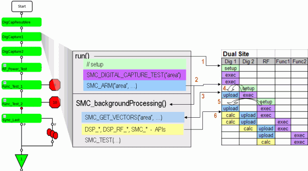

How the SmartCalc framework handles hidden upload
This example shows how the SMC framework handles Hidden upload.
Note Xpress Data Mode, for which a license is required, has to be enabled when using
hidden upload.

Note The numbers in above graphic are referencing to the following list.
- A digital capture test 'DigCapture1' is performed.
SMC_ARM()starts the first SMC background process and arms the upload.- The background process is halted at the
SMC_GET_VECTORS()API waiting for an upload trigger. - The next foreground API (
SMC_DIGITAL_CAPTURE_TEST())of 'DigCapture2' automatically triggers the upload. - The upload is performed serially per site and can be distributed over multiple test suites. In above example the second part of the upload happens during the 'RF_Power_Test'.
- As soon the upload has finished the calculation is started in parallel to any other action (multithreaded) on the system controller.
Functional changes
- Introduced in SmarTest 6.5.3